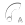

ArcConstrukt ™ v1.0 - copyright ©2012 ocodo.
ArcConstrukt™
by ocodo
ArcConstrukt is a hybrid graphic editor, it's sole purpose is the construction of ArcMachines. What are ArcMachines? Awesome is what they are!
Getting started
You create each Arc in your composition with the + button, and can delete them with the trash button. The active arc is red, get it's real colour back with the X button. Navigate through the layers with the up and down controls.
To change the colour and transparency of an Arc segment, just [NOT YET IMPLEMENTED] and choose the fill or outline colour.
In the tool kit you have one finger rotational control to change the start  and end angles of an arc. Pinch and expand gestures to change the radius , or the thickness . Both these touch controls have locks , so that you don't change something you don't want to. There's also a wide range of grid overlays to help you out (radial and cartesian).
When you're happy with a design, click the camera button and it'll save a 1920x1920 image into your Camera Roll with a transparent background, perfect for incorporating into your edits.
Contact Ocodo
Contact ocodo on what.is.ocodo@gmail.com or @ocodo on Instagram and Twitter.
Find my music at http://soundcloud.com/ocodo or listen to my mixes on http://mixcloud.com/ocodo